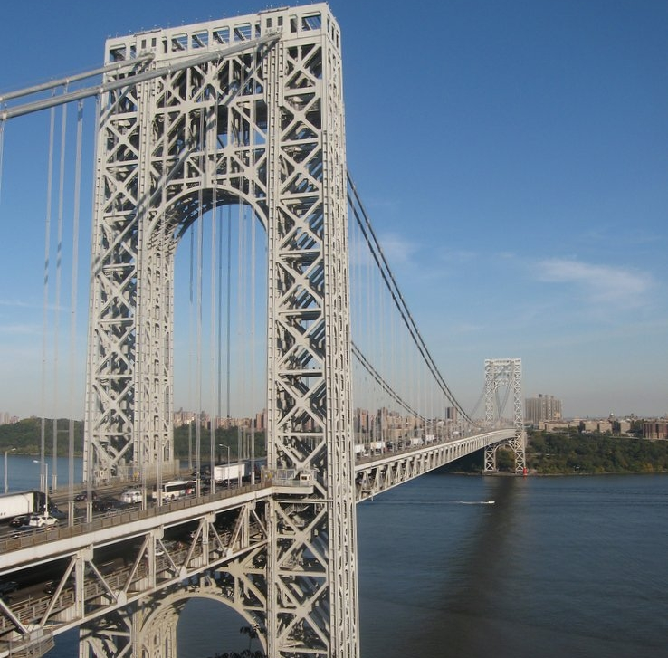
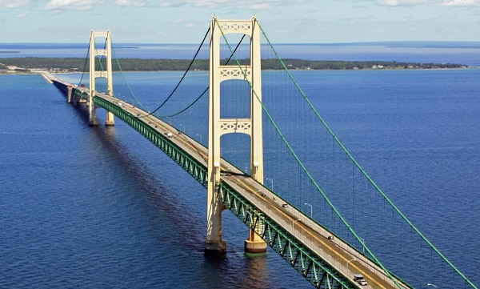

Amazing Bridges

George Washington Bridge
Oklahoma Skydance Bridge

Oakland Bay Bridge
Longest Bridges

Brooklyn Bridge,Manhattan
This is a Hybrid cable-stayed/suspension bridge in New york City.
Learn more
The Royal Bridge,Colorado
The Royal Bridge is a tourist attraction near Canon City, Colorado within Royal Gorge Bridge & Parka.
Learn more

Mackinac Bridge,Mackinac
The Mackinac Bridge is a suspension Bridge spanning the Straits of Mackinac.
Learn moreTallest Bridges
Millau Viaduct Bridge, France
This is a multi-span cable-stayed bridge completed in 2004 across the gorge valley of the Tarn.
Learn moreForesthill Bridge, California
Popularly knownas Auburn Bridge, it goes over American River.
Learn moreZhongxian Changjiang, Bridge
This is a Major Link in the new Highway that goes from Yichang to Xhongxian.
Learn moreOldest Bridges
Kingston Bridge, New Jersey
This is the Franklin Township, somerset County Oldest Bridge.
Learn more